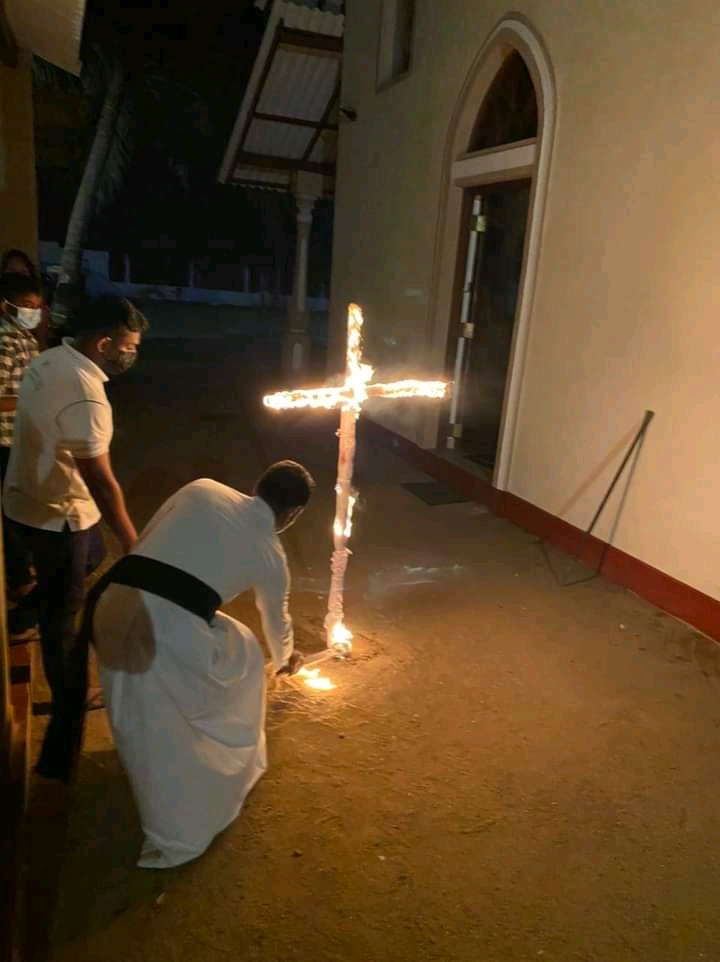
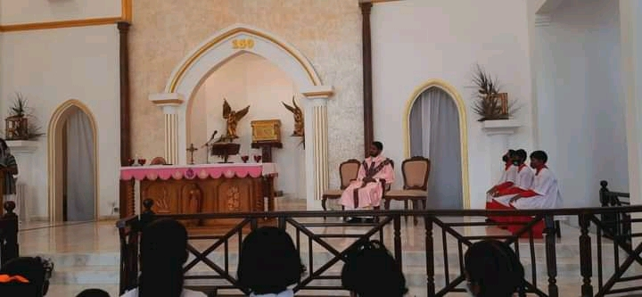
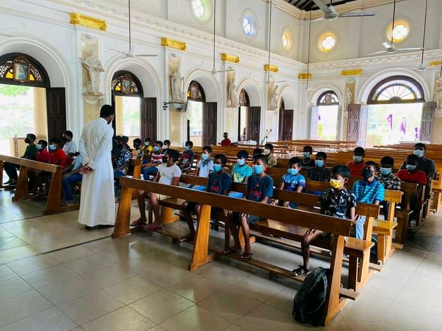

Sunday School Inheriting a very distant past, our Catechetical School had been the school for the village children of Angulana. The building, which has housed generations of students, had been known as the "Palliye iskole - Church School". Although the church school was later closed due to the formation of a new government school with the inclusion of students from the church school and another school in the village, the building of the Church School continues to this day as the catechetical center for the Catholic children of the Angulana Church. The dilapidated Catechetical School building had been renovated in 1992. Under the guidance of the then Parish Priest Rev. Fr. Ranjith Madurawala and from the donations of the German couple Carl and Indrani Fisher, the dilapidated old building of the Catechetical School was completely demolished, and the foundation stone was laid for a new building on January 15, 2006, and thus, the present building had been constructed. From then until today under the guidance and supervision of the Rev. Fathers and Rev. Sisters, Catechists have worked their level best to give Catholic formation to the students. We would like to acknowledge that there are Catechists who have served for more than twenty five years. As a result of their immense efforts, there are innumerable virtuous citizens of the village, who are serving the country and the society, and the best example of this is Rev. Fr. Sameera Perera of the Diocese of Badulla. Presently, there is another boy who has entered the St. Aloysius Minor Seminary – Borella in the hope of consecrating himself to serve the Lord as a Priest. Currently, there are 13 Catechists who serve the Catechetical School including a Rev. Sr., and there are about 230 students who undergo formation under them. Together with the catechism, the Catechetical School is a great place for the children to hone their skills. The societies under the Catechetical School consist of the students’ Choir, Society of the Holy Childhood, Altar Server’s Society, Western Brass Band and many more. Catechists will continue to serve their level best to form students and imbued them with religious, social and educational values.Sunday School Inheriting a very distant past, our Dhamma School had been the school for the village children of Angulana. The building, which has housed generations of students, had been known as the "Palliye iskole - Church School". Although the church school was later closed due to the formation of a new government school with the inclusion of students from the church school and another school in the village, the building of the Church School continues to this day as the catechetical center for the Catholic children of the Angulana Church. The dilapidated Catechetical School building had been renovated in 1992. Under the guidance of the then Parish Priest Rev. Fr. Ranjith Madurawala and from the donations of the German couple Carl and Indrani Fisher, the dilapidated old building of the Catechetical School was completely demolished, and the foundation stone was laid for a new building on January 15, 2006, and thus, the present building had been constructed. From then until today under the guidance and supervision of the Rev. Fathers and Rev. Sisters, Catechists have worked their level best to give Catholic formation to the students. We would like to acknowledge that there are Catechists who have served for more than twenty five years. As a result of their immense efforts, there are innumerable virtuous citizens of the village, who are serving the country and the society, and the best example of this is Rev. Fr. Sameera Perera of the Diocese of Badulla. Presently, there is another boy who has entered the St. Aloysius Minor Seminary – Borella in the hope of consecrating himself to serve the Lord as a Priest. Currently, there are 13 Catechists who serve the Catechetical School including a Rev. Sr., and there are about 230 students who undergo formation under them. Together with the catechism, the Catechetical School is a great place for the children to hone their skills. The societies under the Catechetical School consist of the students’ Choir, Society of the Holy Childhood, Altar Server’s Society, Western Brass Band and many more. Catechists will continue to serve their level best to form students and imbued them with religious, social and educational values.
Upcoming Events
ලේතාරේ ඉරුදින - චාතාරික සමය 4 ඉරුදින
ලුනාව දේවස්තානයේ ගීතිකා කණ්ඩායම විසින් සංවිධනය කරනු ලබන "පසන් ගායනයක්" දේවස්ථාන භුමීයේදී පැවැත්විනි.
පූජා සහයක දරුවන් සදහා වැඩමුලුව (අගුලාන ලුනාව)